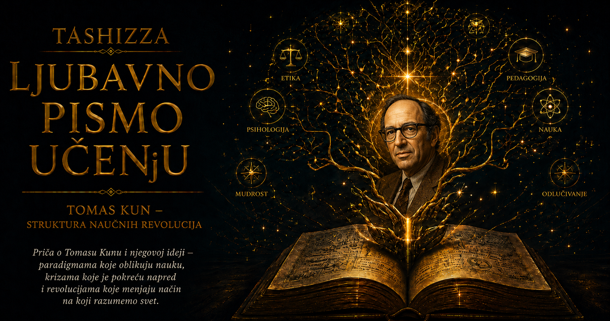

Ljubavno pismo učenju

Život Tomasa Kuna liči na jednu od promena koje je kasnije opisivao u istoriji nauke. Počeo je kao fizičar školovan da rešava probleme unutar prihvaćenih teorija, a postao je istoričar i filozof koji je preispitivao sam okvir u kojem naučni problemi nastaju. Taj prelaz nije bio unapred zamišljen akademski put. Započeo je zbunjenošću pred jednim starim tekstom i otkrićem da čovek može gledati iste reči, iste pojave i isti svet, a ipak ih videti potpuno drugačije.
Tomas Samjuel Kun rođen je 18. jula 1922. godine u Sinsinatiju. Njegov otac Samjuel bio je industrijski inženjer i poslovni savetnik, a majka Minet obrazovana žena posvećena pisanju i društvenom radu. Porodica se ubrzo preselila u Njujork. Roditelji su decu slali u progresivne škole u kojima se cenilo samostalno mišljenje, raspravljanje i povezivanje znanja sa stvarnim životom. Kun je rano zavoleo matematiku, ali je istovremeno razvio snažnu potrebu da razume zbog čega se neki način mišljenja smatra ispravnim.
Na Harvard je stigao 1940. godine da studira fiziku. Bio je ambiciozan, takmičarski nastrojen i naviknut da od sebe zahteva mnogo. Studije je završavao u ubrzanom ratnom programu i diplomirao 1943. godine sa najvišim pohvalama. Fizika mu je nudila jasne probleme, razvijene matematičke postupke i zajednicu ljudi koji su delili merila dobrog rešenja. Tada još nije slutio da će upravo način obrazovanja fizičara kasnije postati važan deo njegove filozofije nauke.
Drugi svetski rat odveo ga je u istraživanja povezana sa radarom. Radio je u Harvardovoj Laboratoriji za radio-istraživanja, a kao član tehničke misije boravio je u Velikoj Britaniji, Francuskoj i Nemačkoj. Savremena fizika pred njegovim očima postajala je vojna tehnologija, strateška prednost i sredstvo koje neposredno utiče na tok istorije. Nauka se više nije mogla posmatrati samo kao niz usamljenih otkrića. Nastajala je kroz laboratorije, ustanove, zajedničke projekte, političke okolnosti i ciljeve koje pojedinačni istraživač nije sam određivao.
Po završetku rata vratio se na Harvard. Magistrirao je 1946, a doktorirao fiziku 1949. godine pod mentorstvom Džona van Vleka. Njegova disertacija pripadala je fizici čvrstog stanja i bavila se primenom kvantne mehanike. Akademska karijera fizičara bila mu je otvorena, ali ga uspešno rešavanje stručnih problema više nije potpuno zadovoljavalo. Privlačila su ga pitanja koja se u svakodnevnom radu fizičara uglavnom ostavljaju po strani: kako neka oblast određuje šta je važan problem, kako naučnici usvajaju zajednički način gledanja i zbog čega se taj način ponekad iz temelja menja.
Presudnu ulogu u toj promeni imao je Džejms Brajant Konant, hemičar i predsednik Harvarda. Konant je razvijao program opšteg obrazovanja kroz koji je želeo da studentima humanističkih disciplina približi način rada nauke. Mladom Kunu poverio je pripremu istorijskih primera iz razvoja mehanike. Zadatak je delovao kao usputna nastavna obaveza, ali ga je primorao da savremenu fiziku na trenutak ostavi po strani i ozbiljno čita dela ljudi koji su prirodu objašnjavali pre Galileja i Njutna.
Najvažniji susret dogodio se 1947. godine, dok je proučavao Aristotelove spise o kretanju. Kunu je Aristotel u početku izgledao kao veličanstven mislilac koji je u fizici pravio neshvatljivo grube greške. Nije poznavao zakon inercije, drugačije je povezivao kretanje i silu, a njegova objašnjenja tela, prostora i promene bila su nespojiva sa pojmovima savremene mehanike. Kuna je progonilo pitanje kako je čovek takve inteligencije mogao stvoriti fiziku koja je vekovima ozbiljno prihvatana.
Nedeljama se vraćao istim stranicama, sve dok nije shvatio da Aristotelove pojmove čita kroz značenja koja su nastala mnogo kasnije. „Kretanje” u Aristotelovom svetu obuhvatalo je širi proces promene; kosmos nije bio beskonačan i homogen prostor; tela su pripadala uređenom svetu kvalitativno različitih mesta i prirodnih težnji. Kada je te pojmove povezao unutar njihovog istorijskog sistema, tekst je prestao da izgleda kao zbirka besmislica. Pred njim se pojavio celovit pogled na prirodu, pogrešan prema današnjoj fizici, ali razumljiv i plodan unutar sopstvenog vremena.
Kun je kasnije taj trenutak opisivao kao iznenadnu promenu vida. Na papiru se ništa nije promenilo, ali je on iste rečenice počeo da čita drugačije. Nije prihvatio Aristotelovu fiziku; naučio je da privremeno uđe u svet u kojem ona ima smisla. To iskustvo odredilo je njegov budući rad. Istoričar nauke mora da rekonstruiše pitanja, pojmove i merila prošle epohe pre nego što proceni njene odgovore. Ako stare naučnike meri isključivo današnjim znanjem, pretvara ih u neuspele pokušaje da postanu mi.
Godine 1948. Kun je primljen u Harvardovo Društvo mlađih istraživača. Tri godine intelektualne slobode omogućile su mu da se udalji od fizike i obrazuje kao istoričar nauke. Taj prelaz zahtevao je posebnu vrstu skromnosti. Imao je doktorat sa Harvarda, a u novoj oblasti morao je ponovo da uči kako se čitaju izvori, rekonstruišu pojmovni sistemi i razume istorijski kontekst. Na njega su snažno uticali radovi Aleksandra Koarea, Emila Mejersona, Elen Mecger, Aneliz Majer i Ludvika Fleka. U njihovim istraživanjima pronašao je potvrdu da naučne ideje imaju sopstvenu istoriju i da menjaju značenje zajedno sa svetom pojmova kojem pripadaju.
Njegova prva velika knjiga, Kopernikanska revolucija, objavljena je 1957. godine. Kun je pokazao da prelazak sa geocentričnog na heliocentrično uređenje sveta nije bio trenutna pobeda očigledne istine. Kopernikov početni sistem zadržavao je mnoge stare elemente i nije odmah davao neuporedivo preciznije rezultate. Njegova snaga nalazila se u drugačijem rasporedu problema i mogućnostima koje su kasnije razvili Kepler, Galileo i Njutn. Promena je trajala generacijama i zahvatila astronomiju, fiziku, teologiju i čovekovo razumevanje sopstvenog mesta u kosmosu.
Posle Harvarda Kun je predavao na Univerzitetu Kalifornije u Berkliju. Tamo je razgovarao sa Stenlijem Kavelom, proučavao Vitgenštajnovu filozofiju jezika i vodio duge, podsticajne, često napete rasprave sa Polom Fajerabendom. Kolege i studenti pamtili su ga kao čoveka velike intelektualne energije. Govorio je brzo, vraćao se na svaku nepreciznu reč i zahtevao da sagovornik jasno pokaže šta pod određenim pojmom podrazumeva. Mogao je biti duhovit, velikodušan i izuzetno podsticajan, ali i nestrpljiv, oštar i iscrpljujuće uporan.
Upravo je u Berkliju dovršio knjigu koja će mu promeniti život. Struktura naučnih revolucija objavljena je 1962. godine kao deo Međunarodne enciklopedije objedinjene nauke. Postojala je fina istorijska ironija u tome: delo koje će uzdrmati predstavu logičkih empirista o razvoju nauke pojavilo se u ediciji nastaloj u njihovom intelektualnom krugu. Kun je na relativno malom prostoru pokušao da sabere godine istorijskih istraživanja i pronađe jezik za pravilnosti koje je u njima prepoznavao.
Knjiga mu je donela slavu kakvu istoričari i filozofi nauke retko dožive. Izrazi „paradigma” i „promena paradigme” ušli su u sociologiju, psihologiju, ekonomiju, književnu teoriju, politiku i svakodnevni govor. Kun je sa nelagodom posmatrao kako se reč koju je pažljivo vezivao za stručne zajednice počinje koristiti za svaku novu ideju, poslovnu odluku ili lični preokret. Njegov pojam postajao je popularniji što se više udaljavao od značenja koje mu je dao.
Posebno ga je uznemiravala tvrdnja da je nauku prikazao kao iracionalnu smenu kolektivnih verovanja. Stalno je objašnjavao da dokazi, tačnost, doslednost i sposobnost rešavanja problema ostaju presudni. Njegova poenta bila je suptilnija: zajednička naučna merila ne funkcionišu kao mašina koja svakom istraživaču u istom trenutku daje isti odgovor. Ljudi mogu poštovati iste vrednosti, a različito procenjivati njihovu važnost. Prihvatanje nove teorije zato sadrži argumente, iskustvo, stručni sud i procenu budućih mogućnosti.
U pogovoru drugom izdanju Strukture naučnih revolucija pokušao je da preciznije razdvoji značenja reči „paradigma”. Uveo je izraz „disciplinarna matrica” za skup zajedničkih teorijskih pretpostavki, vrednosti, instrumenata i postupaka, a posebno je istakao egzemplare — uzorne probleme i rešenja kroz koje studenti uče da prepoznaju sličnost između novih i već savladanih slučajeva. Time je pokazao koliko mu je obrazovanje bilo važno: stručnjak se ne oblikuje samo pamćenjem pravila, već dugim vežbanjem načina gledanja.
Godine 1964. Kun je prešao na Prinston, a 1979. na Masačusetski institut za tehnologiju. Tokom kasnijih decenija sve više se bavio jezikom naučnih teorija, promenama značenja i problemom nesamerljivosti. Njegovo mišljenje nije ostalo zamrznuto u knjizi iz 1962. godine. Neprestano je prepravljao sopstvene pojmove, odgovarao kritičarima i sužavao tvrdnje koje su drugi pretvarali u široke slogane. Čovek koji je proučavao promene naučnih okvira nije želeo da sopstvena teorija postane nedodirljiva paradigma.
U njegovom privatnom životu bilo je velikih promena i napetosti koje javna slava nije uklonila. Sa prvom suprugom Ketrin Mus imao je troje dece. Kasnije se razveo i oženio Džehan Barton Berns. Ljudi koji su mu bili bliski svedočili su o njegovoj izuzetnoj sposobnosti da se potpuno preda razgovoru i problemu, ali i o zahtevnosti takvog intenziteta. Njegova želja za preciznošću bila je istovremeno dar i teret: pokretala je duboko mišljenje, a u odnosima je umela da postane nestrpljenje prema svemu što mu je delovalo nejasno ili nedovoljno promišljeno.
Pred kraj života radio je na novoj knjizi o razvoju naučnog znanja. Nije uspeo da je dovrši. Preminuo je 17. juna 1996. godine u Kembridžu, posle bolesti. Iza njega su ostali rukopisi, intervjui i predavanja koji pokazuju da je svoju veliku ideju do poslednjih godina smatrao nedovršenim istraživačkim problemom. Više ga je zanimalo da razume kako ljudi usvajaju i menjaju pojmovne svetove nego da brani svaku formulaciju kojom ih je nekada opisao.
Najličniji deo njegovog nasleđa ostao je skriven iza slavne reči „paradigma”. Kunova misaona avantura počela je spremnošću da zastane pred tekstom koji mu je izgledao besmisleno i zapita se da li je problem samo u Aristotelu ili i u očima savremenog čitaoca. Umesto brzog podsmeha prošlosti, izabrao je strpljenje potrebno da upozna jedan strani način mišljenja. Taj čin intelektualne skromnosti otvorio mu je čitavu oblast istraživanja.
Čovek koji je naučne revolucije video iznutra nije otkrio jednostavan recept za menjanje sveta. Pokazao je koliko je teško prepoznati granice pogleda koji nam izgleda prirodan. Njegov život svedoči da velika promena može početi onda kada obrazovan čovek privremeno odloži sigurnost sopstvenog znanja, pažljivo sasluša ideju koju još ne razume i dopusti mogućnost da se pred njim nalazi drugačije uređen svet.